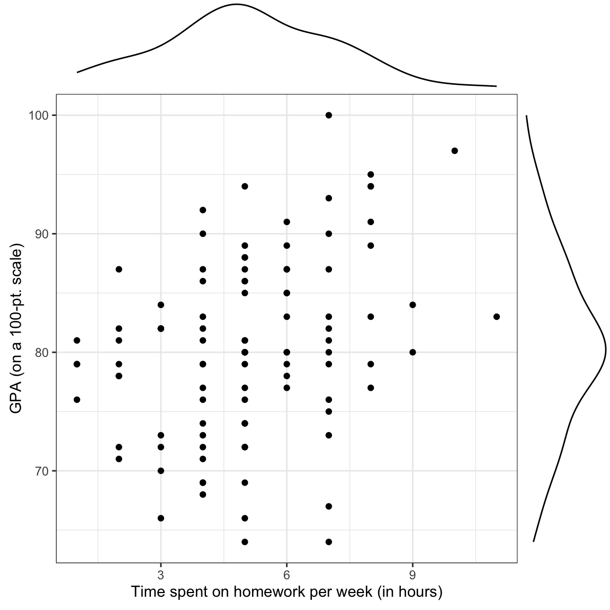
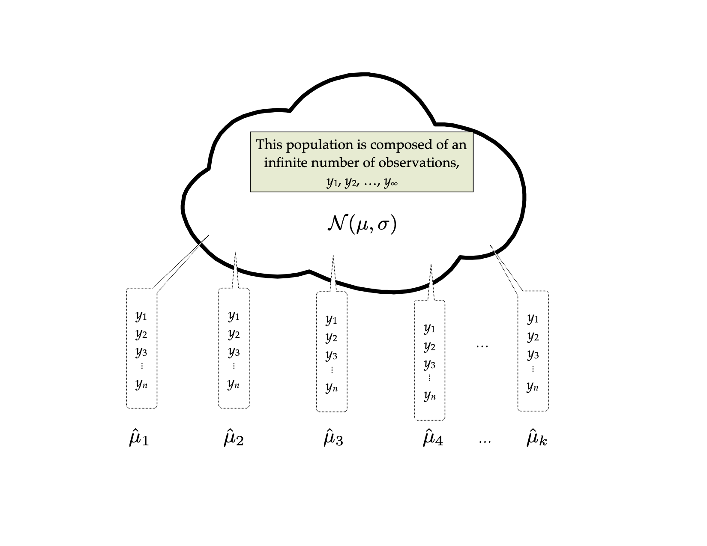
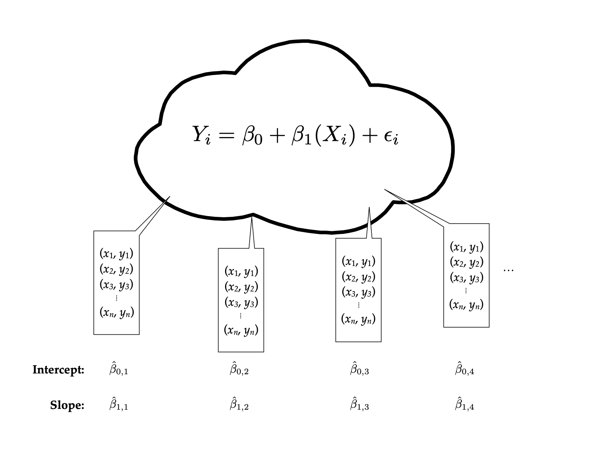
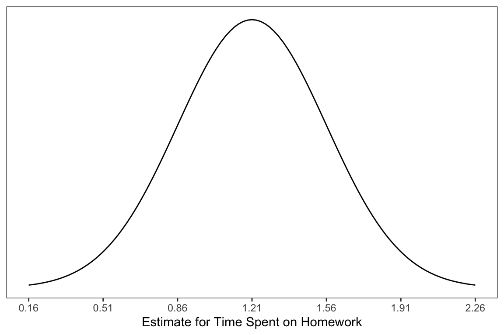
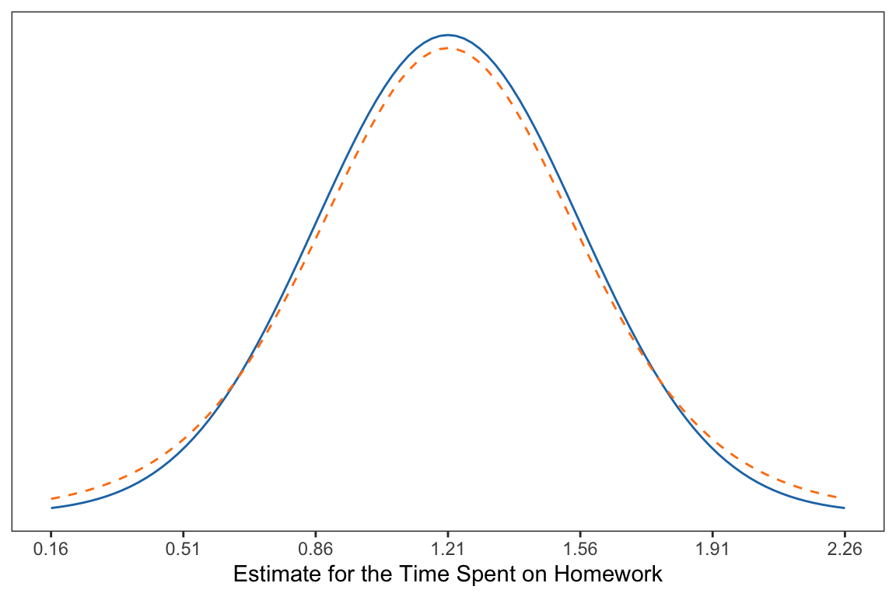
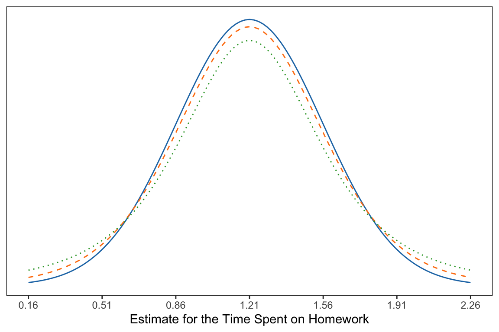
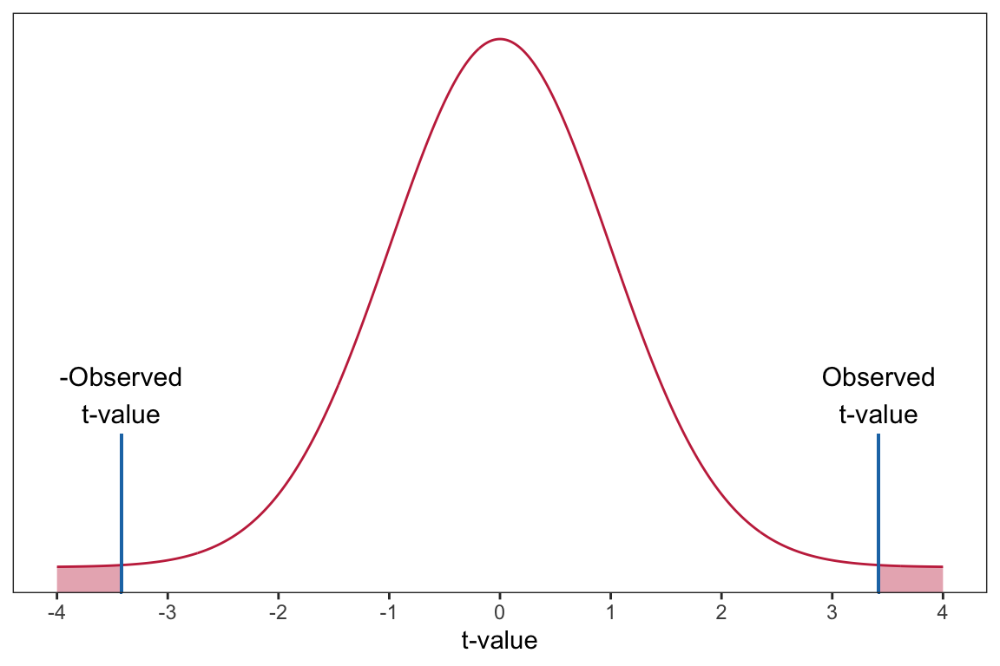
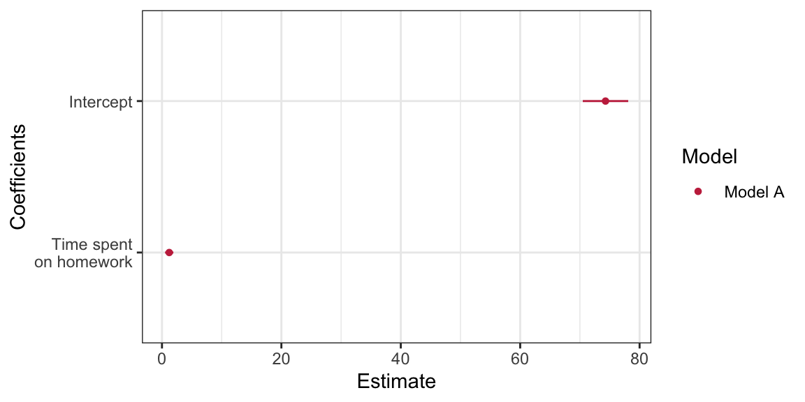
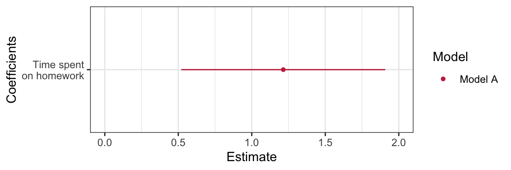

# Load libraries
library(broom)
library(corrr)
library(dplyr)
library(ggplot2)
library(readr)
# Import data
keith = read_csv(file = "https://raw.githubusercontent.com/zief0002/modeling/main/data/keith-gpa.csv")
#View data
keith9 Coefficient-Level Inference
In this chapter, you will learn about statistical inference at the coefficient-level for regression models. To do so, we will use the keith-gpa.csv data to examine whether time spent on homework is related to GPA. The data contain three attributes collected from a random sample of \(n=100\) 8th-grade students (see the data codebook). To begin, we will load several libraries and import the data into an object called keith.
In the previous chapters, we examined the marginal distributions of the outcome (gpa) and predictor (homework), as well as statistics summarizing the mean and variation in these distributions. We also examine a scatterplot of the outcome versus each of the predictors and the bivariate correlations (see here). Here we use the ggMarginal() function from the {ggExtra} package to include the marginal density plots directly on the scatterplot.
# Scatterplot
p1 = ggplot( data = keith, aes(x = homework, y = gpa) ) +
geom_point() +
theme_bw() +
xlab("Time spent on homework per week (in hours)") +
ylab("GPA (on a 100-pt. scale)")
# Load ggExtra package
library(ggExtra)
# Plot scatterplot and density plots on single graph
ggMarginal(p1, margins = "both", type = "density")
We also create a table to present the correlation coefficients. This table could be extended to include additional variables (which we will do in later chapters). To save creating an additional table, we also include the mean and standard deviations in the same table by placing them on the main diagonal.
| 1. | 2. | |
|---|---|---|
| 1. GPA | ||
| 2. Time spent on homework |
We will also fitted a model by regressing GPA on time spent on homework and storing those results in an object called lm.a.
# Fit regression model
lm.a = lm(gpa ~ 1 + homework, data = keith)
# View output
lm.a
Call:
lm(formula = gpa ~ 1 + homework, data = keith)
Coefficients:
(Intercept) homework
74.290 1.214 The fitted equation is:
\[ \hat{\mathrm{GPA}_i} = 74.29 + 1.21(\mathrm{Time~spent~on~homework}_i), \]
Summarizing this,
This model estimated mean GPA for all 8th-grade students who spend 0 hours a week on homework is 74.29. Each additional hour 8th-grade students spend per week on homework is associated with a difference in GPA of 1.21, on average. Differences in time spent on homework explains 10.7% of the variation in students’ GPAs. All this suggests that time spent on homework is related to GPA for the \(n=100\) 8th-graders in the sample.
9.1 Statistical Inference
What if we want to understand the relationship between time spent on homework and GPA for a larger population of 8th-grade students, say all of them in the district? The problem is that if we had drawn a different sample of \(n=100\) 8th-grade students, all the regression estimates (\(\hat\beta_0, \hat\beta_1,\) and \(R^2\)) would be different than the ones we obtained from our sample. This makes it difficult to say, for example, how the conditional mean GPA differs for students with differing amounts of time spent on homework. In our observed sample, \(\hat\beta_1\) was 1.21. But, had we sampled different students, we might have found that \(\hat\beta_1\) was 2.03. And a different random sample of employees we might have produced a \(\hat\beta_1\) of 0.96.
This variation in the estimates arises because of the random nature of the sampling. One of the key findings in statistical theory is that the amount of variation in estimates under random sampling is completely predictable (this variation is called sampling error). Being able to quantify the sampling error allows us to provide a more informative answer to the research question. For example, it turns out that based on the quantification of sampling error in our example, we believe that the actual \(\beta_1\) is between 0.51 and 1.92.
Statistical inference allows us to learn from incomplete or imperfect data Gelman & Hill (2007). In many studies, the primary interest is to learn about one or more characteristics about a population. These characteristics must be estimated from sample data. This is the situation in our example, where we have only a sample of 8th-grade students and we want to understand the relationship between time spent on homework and GPA for ALL 8th-grade students in the district.
In the example, the variation in estimates arises because of sampling variation. It is also possible to have variation because of imperfect measurement. This is called measurement error. Despite these being very different sources of variation, in practice they are often combined (e.g., we measure imperfectly and we want to make generalizations).
Regardless of the sources of variation, the goals in most regression analyses are two-fold:
- Estimate the parameters from the observed data; and
- Summarize the amount of uncertainty (e.g., quantify the sampling error) in those estimates.
The first goal we addressed in the Simple Linear Regression—Description chapter. It is the second goal that we will explore in this chapter.
9.2 Quantification of Uncertainty
Before we talk about estimating uncertainty in regression, let me bring you back in time to your Stat I course. In that course, you probably spent a lot of time talking about sampling variation for the mean. The idea went something like this: Imagine you have a population that is infinitely large. The observations in this population follow some probability distribution. (This distribution is typically unknown in practice, but for now, let’s pretend we know what that distribution is.) For our purposes, let’s assume the population is normally distributed with a mean of \(\mu\) and a standard deviation of \(\sigma\).
Sample n observations from that population. Based on the n sampled observations, find the mean. We will call this \(\hat\mu_1\) since it is an estimate for the population mean (the subscript just says it is the first sample). In all likelihood, \(\hat\mu_1\) is not the exact same value as \(\mu\). It varies from the population mean because of sampling error.
Now, sample another n observations from the population. Again, find the mean. We will call this estimate \(\hat\mu_2\). Again, it probably varies from \(\mu\), and may be different than \(\hat\mu_1\) as well. Continue to repeat this process: randomly sample n observations from the population; and find the mean.

The distribution of the sample means, it turns out, is quite predictable using statistical theory. Theory predicts that the distribution of the sample means will be normally distributed. It also predicts that the mean, or expected value, of all the sample means will be equal to the population mean, \(\mu\). Finally, theory predicts that the standard deviation of this distribution, called the standard error, will be equal to the population standard deviation divided by the square root of the sample size. Mathematically, we would write all this as,
\[ \hat\mu_n\sim\mathcal{N}\left(\mu, \dfrac{\sigma}{\sqrt{n}}\right). \]
The important thing is not that you memorize this result, but that you understand that the process of randomly sampling from a known population can lead to predictable results in the distribution of statistical summaries (e.g., the distribution of sample means). The other crucial thing is that there the sampling variation can be quantified. The standard error is the quantification of that sampling error. In this case, it gives a numerical answer to the question of how variable the sample mean will be because of random sampling.
9.2.1 Quantification of Uncertainty in Regression
We can extend these ideas to regression. Now the thought experiment goes something like this: Imagine you have a population that is infinitely large. The observations in this population have two attributes, call them X and Y. The relationship between these two attributes can be expressed via a regression equation as: \(\hat{Y}=\beta_0 + \beta_1(X)\). Randomly sample n observations from the population. This time, rather than computing a mean, regress the sample Y values on the sample X values. Since the sample regression coefficients are estimates of the population parameters, we will write this as: \(\hat{Y}=\hat{\beta}_{0,1} + \hat{\beta}_{1,1}(X)\). Repeat the process. This time the regression equation is: \(\hat{Y}=\hat{\beta}_{0,2} + \hat{\beta}_{1,2}(X)\). Continue this process an infinite number of times.

Statistical theory again predicts the characteristics of the two distributions, that of \(\hat{\beta}_0\) and that of \(\hat{\beta}_1\). The distribution of \(\hat{\beta}_0\) can be expressed as,
\[ \hat\beta_0\sim\mathcal{N}\left(\beta_0,~ \sigma_\epsilon\sqrt{\dfrac{1}{n} + \dfrac{\mu_X^2}{\sum(X_i-\mu_X)^2}}\right). \]
Similarly, the distribution of \(\hat{\beta}_1\) can be expressed as,
\[ \hat\beta_1\sim\mathcal{N}\left(\beta_1,~ \dfrac{\sigma_\epsilon}{\sigma_x\sqrt{n-1}}\right). \]
Again, don’t panic over the formulae. What is important is that theory allows us to quantify the variation in both \(\hat{\beta}_0\) and \(\hat{\beta}_1\) that is due to sampling error. In practice, our statistical software will give us the numerical estimates of the two standard errors.
9.2.2 Obtaining SEs for the Regression Coefficients
To obtain the standard errors for the regression coefficients, we will use the tidy() function from the {broom} package to display the fitted regression output. We provide the fitted regression object as the input to this function.
# Display the coefficient-level output
tidy(lm.a)In the displayed output, we now obtain the estimates for the standard errors in addition to the coefficient estimates. We can use these values to quantify the amount of uncertainty due to sampling error. For example, the estimate for the slope, 1.21, has a standard error of 0.35. One way to envision this is as a distribution. Our best guess (mean) for the slope parameter is 1.21. The standard deviation of this distribution is 0.35, which indicates the precision (uncertainty) of our estimate.

In the social sciences, it is typical to express uncertainty as \(\pm2(SE)\). Here we would say that becquse of sampling variation, the slope is likely between 0.51 and 1.91. Interpreting this, we might say,
For all 8th-graders in the district, each one-hour difference in time spent on homework per week is associated with a difference in overall GPA between 0.51 and 1.91, on average.
Similarly, we could express the uncertainty in the intercept as,
\[ 74.29 \pm 2(1.94) = \left[70.41,~78.17\right] \]
Interpreting this, we might say,
The average GPA for all 8th-grade students in the district who spend zero hopurs per week on homework is between 70.41 and 78.17.
We can use the conf.int=TRUE argument in the tidy() function to obtain these limits directly. By default this will compute a 95% CI. This can be changed using the conf.level= argument.1
# Include CIs in the coefficient-level output
tidy(lm.a, conf.int = TRUE, conf.level = 0.95)9.3 Hypothesis Testing
Some research questions point to examining whether the value of some regression parameter differs from a specific value. For example, it may be of interest whether a particular population model (e.g., one where \(\beta_1=0\)) could produce the sample result of a particular \(\hat\beta_1\). To test something like this, we state the value we want to test in a statement called a [null hypothesis](https://en.wikipedia.org/wiki/Null_hypothesis. For example,
\[ H_0: \beta_1 = 0 \]
The hypothesis is a statement about the population. Here we hypothesize \(\beta_1=0\). It would seem logical that one could just examine the estimate of the parameter from the observed sample to answer this question, but we also have to account for sampling uncertainty. The key is to quantify the sampling variation, and then see if the sample result is unlikely given the stated hypothesis.
One question of interest may be: Is there evidence that the average GPA differs for different amounts of time spent on homework? In our example, we have a \(\hat\beta_1=1.21\). This is sample evidence, but does 1.21 differ from 0 more than we would expect because of random sampling? If it doesn’t, we cannot really say that the average GPA differs for different amounts of time spent on homework. To test this, we make an assumption that there is no relationship between time spent on homework and GPA, in other words, the slope of the line under this assumption would be 0. Before we talk about how to test this, we need to introduce one wrinkle into the procedure.
9.4 Estimating Variation from Sample Data: No Longer Normal
In theory, the sampling distribution for two regression coefficients were both normally distributed. This is the case when we know the variation parameters in the population. For example, for the sampling distribution of the slope to be normally distributed, we would need to know \(\sigma_\epsilon\) and \(\sigma_x\).
In practice these values are typically unknown and are estimated from the sample data. Anytime we are estimating things we introduce additional uncertainty. In this case, the uncertainty affects the shape of the sampling distribution.

Compare the normal distribution (solid, blue) to the distribution with additional uncertainty (dashed, orange). From the figure you can see that the additional uncertainty slightly changed the shape of the distribution from normal.
- It is still symmetric and unimodal (like the normal distribution).
- The additional uncertainty makes more extreme values more likely than they are in the normal distribution.
- The additional uncertainty makes values in the middle less likely than they are in the normal distribution.
It is important to note that the amount of uncertainty affects how closely the shape of the distribution matches the normal distribution. And, that the sample size directly affects the amount of uncertainty we have. All things being equal, we have less uncertainty when we have larger samples. The following figure illustrates this idea.

9.4.1 The t-Distribution
As pointed out, the distributions with uncertainty introduced from using a sample of data are not normally distributed. Thus, it doesn’t make sense to use a normal distribution as a model for describing the sampling variation. Instead, we will a t-distribution; a family of distributions that have several advantageous properties:
- They are unimodal and symmetric.
- They have more variation (uncertainty) than the normal distribution resulting in a distribution that has thicker tails and is shorter in the middle than a normal distribution.
- How thick the tails are and how short the middle of the distribution is, is related to the sample size.
Specifically, the t-distribution is unimodal and symmetric with a mean of 0. The variance of the distribution (which also specifies the exact shape), is
\[ \mathrm{Var} = \frac{\textit{df}}{\textit{df} - 2} \]
for \(\textit{df}>2\) where \(\textit{df}\) is referred to as the degrees of freedom.
9.4.2 Back to the Hypothesis Test
Recall that we are interested in testing the following hypothesis,
\[ H_0: \beta_1 = 0 \]
To test this we compute the number of standard errors that our observed slope (\(\hat\beta_1=1.21\)) is from the hypothesized value of zero (stated in the null hypothesis). Since we already obtained the standard error for the slope (\(SE=0.354\)), we just use some straight-forward algebra to compute this:
\[ \frac{1.21 - 0}{0.354} = 3.42 \]
Interpreting this, we can say,
The observed slope of 1.21 is 3.42 standard errors from the expected value of 0.
This value is referred to as the observed t-value. (It is similar to a z-value in the way it is computed; it is standardizing the distance from the observed slope to the hypothesized value of zero. But, since we had to estimate the SE using the data, we introduced additional uncertainty; hence a t-value.)
We can evaluate this t-value within the appropriate t-distribution. For regression coefficients, the t-distribution we will use for evaluation has degrees of freedom that are a function of the sample size and the number of coefficients being estimated in the regression model, namely,
\[ \textit{df} = n - (\textrm{number of coefficients}). \]
In our example the sample size (n) is 100, and the number of coefficients being estimated in the regression model is two (\(\hat\beta_0\) and \(\hat\beta_1\)). Thus,
\[ \textit{df} = 100 - 2 = 98 \]
Based on this, we will evaluate our observed t-value of 3.42 using a t-distribution with 98 degrees of freedom. Using this distribution, we can compute the probability of obtaining a t-value (under random sampling) at least as extreme as the one in the data under the assumed model. This is equivalent to finding the area under the probability curve for the t-distribution that is greater than or equal to 3.42.2 This is called the p-value.

The p-value is computed for us and displayed in the tidy() output, along with the t-value (provided in the statistic column). In our example, \(p=0.000885\). (Note that the p-value might be printed in scientific notation. For example, it may be printed as 8.85e-04, which is equivalent to \(8.85 \times 10^{-4}\).) To interpret this we would say,
The probability of observing a t-value of 3.42, or a t-value that is more extreme, under the assumption that \(\beta_1=0\) is 0.000885.
This is equivalent to saying:
The probability of observing a sample slope of 1.21, or a slope that is more extreme, under the assumption that \(\beta_1=0\) is 0.000885.
This is quite unlikely, and indicates that the empirical data are inconsistent with the hypothesis that \(\beta_1=0\). As such, it serves as evidence against the hypothesized model. In other words, it is likely that \(\beta_1\neq0\).
9.4.3 Testing the Intercept
The hypothesis being tested for the intercept is \(H_0:\beta_0=0\). The tidy() output also provides information about this test:
# Coefficient-level output
tidy(lm.a)The results indicate that the observed intercept of 74.28 is 38.26 standard errors from the hypothesized value of 0;
\[ t = \frac{74.28 - 0}{1.94} = 38.26 \]
Assuming the null hypothesis that \(\beta_0=0\) is true, the probability of observing a sample intercept of 74.28 or one that is more extreme, is \(1.01 \times 10^{-60}\). (Any p-value less than .001 is typically reported as \(p<.001\).) This is evidence against the hypothesized model. Because of this, we would say the empirical data are inconsistent with the hypothesis that \(\beta_0=0\); it is unlikely that the intercept in the population is zero.
9.5 ‘Statistical Significance’: An Outdated Idea for Research
You may have read papers or taken statistics courses that emphasized the language “statistically significant”. This adjective was typically used when the empirical evidence was inconsistent with a hypothesized model, and the researcher subsequently “rejected the null hypothesis”. In the social sciences this occurred when the \(p\)-value was less than or equal to 0.05.
In 2019, the American Statistical Association put out a special issue in one of their premier journals, stating,
…it is time to stop using the term ‘statistically significant’ entirely. Nor should variants such as ‘significantly different,’ ‘p < 0.05,’ and ‘nonsignificant’ survive, whether expressed in words, by asterisks in a table, or in some other way. Regardless of whether it was ever useful, a declaration of ‘statistical significance’ has today become meaningless. (Wasserstein & Schirm, 2019, p. 2)
They went on to say,
…no p-value can reveal the plausibility, presence, truth, or importance of an association or effect. Therefore, a label of statistical significance does not mean or imply that an association or effect is highly probable, real, true, or important. Nor does a label of statistical nonsignificance lead to the association or effect being improbable, absent, false, or unimportant. (Wasserstein & Schirm, 2019, p. 2)
This is not to say that p-values should not be reported; they should. But rather that we should not arbitrarily dichotomize a continuous measure into two categories whose labels are at best meaningless and at worst misleading. The goal of scientific inference (which is much broader than statistical inference for a single study) is replicability and empirically generalizable results and findings. And, as Hubbard et al. (2019) point out, declaring findings as ‘significant’ or ‘not significant’ works in direct opposition to the broader culmination of knowledge and evidence in a field.
Instead, we want to begin to see the p-value as a measure of incompatibility between the empirical data and a very specific model, one in which a certain set of assumptions are true. Both the empirical data (which are unique to the specific study) and the model’s set of assumptions often make the p-value unique to the specific study carried out and less useful in the broader goal of scientific inference. As such we need to come to view the p-value for what it is, one measure of evidence, for one very particular model, in one very localized study. As Ron Wasserstein reminds us,
Small p-values are like a right-swipe in Tinder. It means you have an interest. It doesn’t mean you’re ready to book the wedding venue.
9.6 Confidence Intervals as Compatibility Intervals
To build on this, let’s return to the reporting and interpretation of confidence intervals. In our example, the 95% CI was:
# Coefficient-level output with CI
tidy(lm.a, conf.int = TRUE, conf.level = 0.95)One way of interpreting this interval is that every value in the interval is a parameter value that is reasonably compatible with the empirical data. For example, in considering the CI for the slope parameter, population slope \((\beta_1)\) values between 0.51 and 1.92 are all reasonably compatible with the empirical data (with the caveat that, again, all the assumptions used to create the interval are satisfied). As applied researchers, we should describe the practical implications of all values inside the interval, especially the observed effect (or point estimate) and the limits.
For us this means describing the practical implications of the true slope being 1.21, as low as 0.51, and as high as 1.92. Are these meaningful differences in GPA (measure on a 100-pt. scale)? Given that the SD for GPA was 7.62, a one-hour difference in time spent on homework is associated with at most a 0.25 SD difference in GPA or as little as a 0.07 SD difference in GPA. This is not a large difference, however whether it is meaningful depends on previous research about GPA.3
Confidence intervals help us keep an open-mind about uncertainty, after all they suggest several values that are compatible with the empirical data. However, they can also be misleading. Amrhein et al. (2019) point out four key points fo us to remember as we use CIs:
- Just because the interval gives the values most compatible with the data, given the assumptions, it does not mean values outside it are incompatible; they are just less compatible.
- Not all values inside are equally compatible with the data, given the assumptions. The point estimate is the most compatible, and values near it are more compatible than those near the limits.
- Like the 0.05 threshold from which it came, the default 95% used to compute intervals is itself an arbitrary convention.
- Last, and most important of all, be humble: compatibility assessments hinge on the correctness of the statistical assumptions used to compute the interval. In practice, these assumptions are at best subject to considerable uncertainty.
9.6.1 Coefficient Plot
One plot that helps visualize the estimates of the regression coefficients and the associated uncertainty is a coefficient plot. This plot, recommended by Gelman & Hill (2007), is a graphical representation of the information provided in the tidy() output.

The coefficient plot shows the estimates of the regression coefficients (dots) and the uncertainty in those estimates via the confidence intervals (blue shading). Notice that darker shading is associated with parameter values that are more probable given the empirical data; the sample estimates are the most likely values for the regression parameters.
To create a coefficient plot, we will use the dwplot() function from the {dotwhisker} package. This function takes the ouput of tidy() as input. Since the function will identify the model, we also mutate a column called model into the tidy output giving the name of the model. Since dwplot() is based on ggplot() syntax, we can add layers to customize the plot in the same manner as if we were building a ggplot. The syntax I used to create the coefficient plot above is:
# Load library
library(dotwhisker)
# Store output from tidy
mod_1 = tidy(lm.a) |>
mutate(model = "Model A")
# Create plot
dwplot(mod_1, show_intercept = TRUE) +
theme_bw() +
scale_color_manual(name = "Model", values = c("#c62f4b")) +
scale_x_continuous(name = "Estimate") +
scale_y_discrete(name = "Coefficients", labels = c("Time spent\non homework", "Intercept"))By default, the plot will display 95% CI. To display a different level of confidence, specify conf.level= argument in tidy(). There are several variations of this plot. For example, below I omit the intercept from this plot. To do this, I use the filter() function to omit the row in the tidy() output that includes the intercept.4 I also change the limits on the x-axis to better fit the homework interval.

Amrhein, V., Greenland, S., & McShane, B. (2019). Retire statistical significance. Nature, 567, 305–307.
Gelman, A., & Hill, J. (2007). Data analysis using regression and multilevel/hierarchical models. Cambridge University Press.
Hubbard, R., Haig, B. D., & Parsa, R. A. (2019). The limited role of formal statistical inference in scientific inference. The American Statistician, 73, 91–98. https://doi.org/10.1080/00031305.2018.1464947
Wasserstein, R., & Schirm, A. (2019). Moving to a world beyond \(p < .05\). Keynote presentation at the United States Conference on Teaching Statistics.
The actual limits from the 95% CI are computed using a multiplier that is slightly different than two; thus the discrepancy between our off-the-cuff computation earlier and the result from
tidy(). Using a multiplier of two is often close enough for practical purposes, especially when the sample size is large.↩︎We actually compute the area under the probability curve that is greater than or equal to 3.42 AND that is less than or equal to \(-3.42\).↩︎
It turns out this is quite a complicated question and the effects of homework depend on a variety of student factors, including age, culture, household income, etc. Many studies have also found a non-linear effect of homework, indicating there may be an optimum amount for some groups of students.↩︎
The intercept could also be dropped using
show.intercept=FALSEwhich is the default fordwplot(). Thefilter()method, however, allows you to drop or select different predictors for display as well as the intercept.↩︎